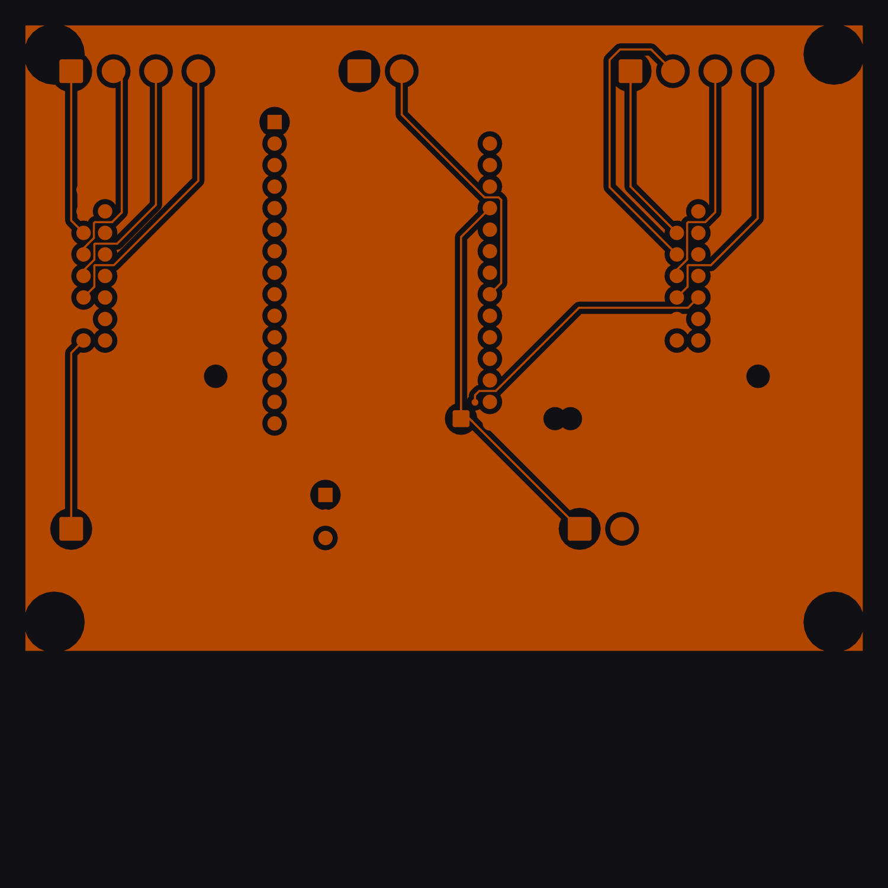
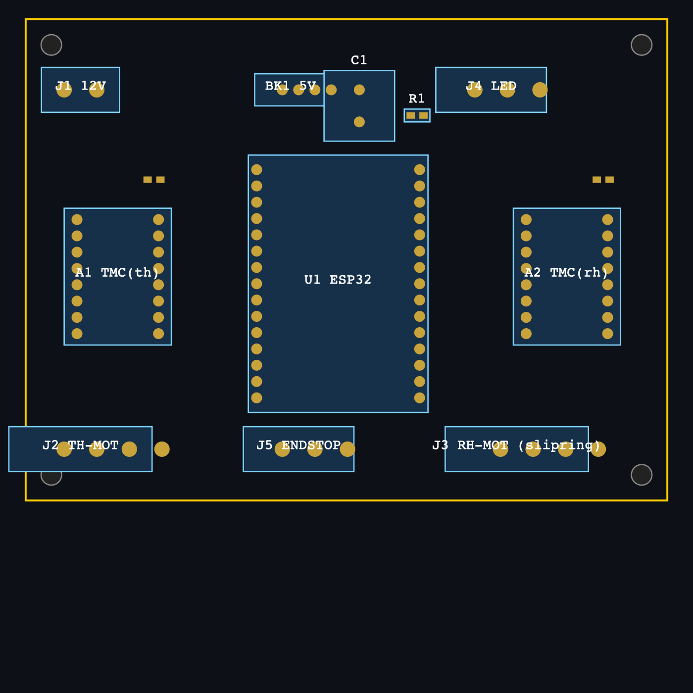
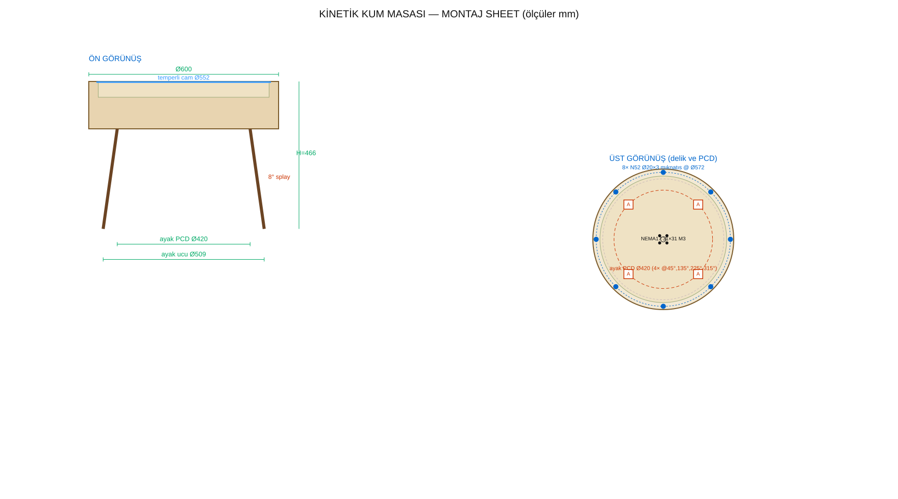

Üretim Gerçekleme
Gerçek ürün durumu — dürüst değerlendirme
Bu bir deneme değil; profesyonel donanım geliştirme (NPI) disiplinine göre. Her alt sistemin gerçek olgunluğu açıkça belirtilir.
| Alt sistem | Durum | Not |
|---|---|---|
| Mekanik tasarım | 🟡 Tasarlandı | Geometri + montaj sheet + patlatma; fiziksel prototip yapılmadı |
| Kontrol kartı (PCB) | 🟠 Rev-B tasarlandı (bulgular işlendi), DRC temiz — fiziksel test EDİLMEDİ | UART adres, LED level-shifter, giriş koruması, bulk cap, EN pull-up eklendi → yeniden route (0 short). Sıra: prototip + bring-up |
| Firmware | 🟠 Yazılmadı — mimari+config var | FluidNC + Dune Weaver; örnek config hazır, cihazda doğrulanmadı |
| BOM / maliyet / tedarik | 🟢 Hazır | Gerçek malzeme + TR fiyat |
| Görseller | 🟢 Hazır | Ön-görselleştirme (satış için fiziksel ürün fotosu gerekir) |
PCB test edildi mi? Hayır — yazılımda tasarlandı, DRC geçti, ama fiziksel üretilip ölçülmedi. Üretim öncesi yol: inceleme düzeltmeleri → prototip → bring-up testi.
Kontrol Kartı · KiCad 9
Tam routing'li PCB
Freerouting ile tam yönlendirildi — DRC: 0 ratsnest 0 kısa devre 0 bakır clearance. ESP32 + 2× TMC2209 + WS2812 + güç. Final Gerber + STEP 3D üretildi.



Montaj Sheet
Hesaplanmış geometri + mıknatıslı modüler yapı
Patlatılmış görünüm (13 parça) + ölçülü teknik çizim. Geometri montaj_hesap.py ile parametrik.


Ana ölçüler
- Drum Ø600 · H toplam 467 mm
- Kum havuzu Ø540 × 50
- Temperli cam Ø552 × 6
Ayaklar (4)
- 8° splay, boy 320 mm
- Bağlantı PCD Ø420 (45°/135°/225°/315°)
- Ayak ucu Ø509 → stabil
Mıknatıslı üst modül
- 8× N52 Ø20×3 @ Ø572
- Tutma 21.6 kgf, SF 5.2×
- Elle kaldırılır → bakım erişimi
{kind=link}
BOM & Maliyet
Gerçek malzeme · Türkiye fiyatı
Gerçekçi 2026 perakende (₺). Detay + tedarik kaynakları: BOM_uretim.md.
| Grup | Prototip ₺ | Seri ₺/ad |
|---|---|---|
| Ahşap (ceviz kaplama, ayak) | 3.900 | 2.150 |
| Temperli cam | 850 | 600 |
| Mekanik (motor, ray, slip ring, Al) | 2.930 | 1.680 |
| Mıknatıs (N52) + bilye | 561 | 360 |
| Güç / LED (WS2812B) | 730 | 485 |
| Kontrol kartı | 1.170 | 440 |
| Sarf / bağlantı | 686 | 410 |
| Malzeme toplam | ≈ 10.800 | ≈ 6.100 |
| + işçilik → gerçekçi | ≈ 13.5–15k | ≈ 7.300 |
Nereden alınır
- Elektronik/motor/ray/slip ring: Robotistan, Motorobit, Direnç.net
- LED: Samm Teknoloji, LED Pazarı (toplu: LCSC/Aliexpress)
- Mıknatıs N52: yurtiçi neodyum satıcıları
- Ahşap gövde/CNC + ayak: yerel CNC ahşap / mobilya atölyesi
- Temperli cam: yerel temperli cam imalatçısı (rodajlı)
- Alüminyum lazer (şasi/kol): sac-alüminyum lazer atölyesi
- PCB: JLCPCB/PCBWay veya yurtiçi PCB
📈 Gerçeklik yol haritası — sonraki aşamalar
Hedef satış fiyatı: seri COGS ~7.800 ₺ → MSRP ≈ 21.900 ₺ (~$650) (≈%64 brüt marj; benzer ürün $699). Lansman: 17.900 ₺.
Yazılım: 0 ₺ (açık kaynak FluidNC + Dune Weaver). Tam analiz: üretim dosyası.